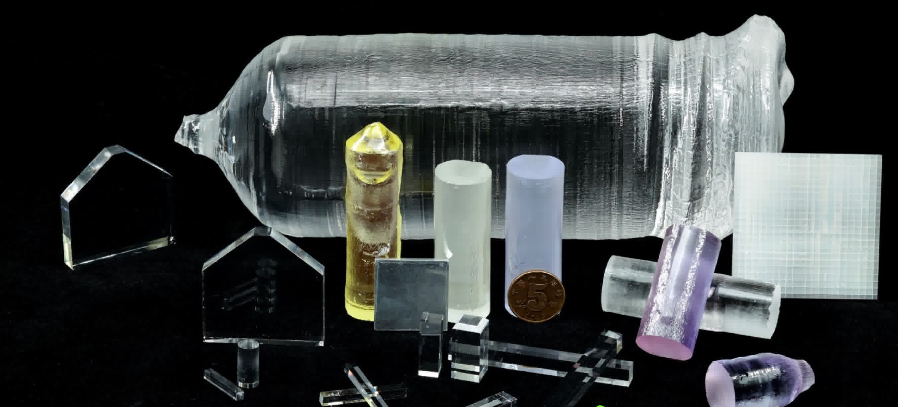
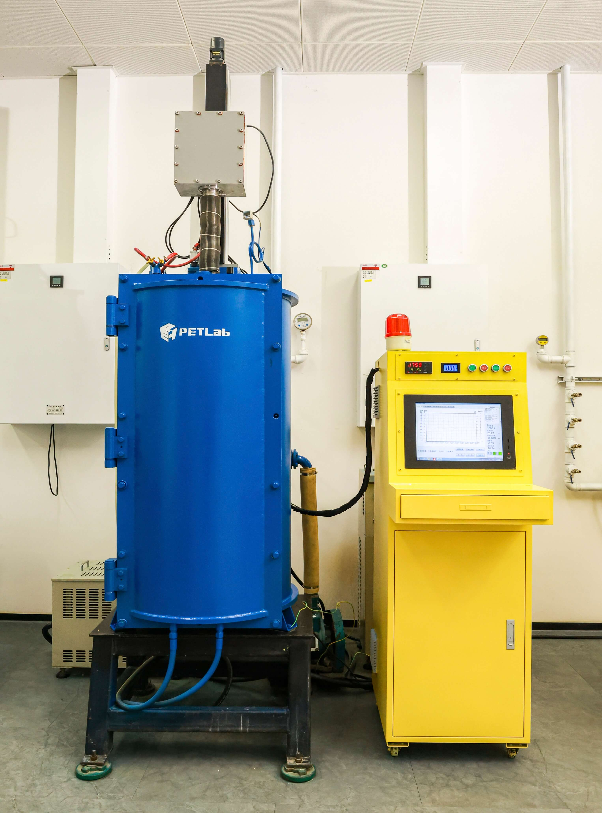
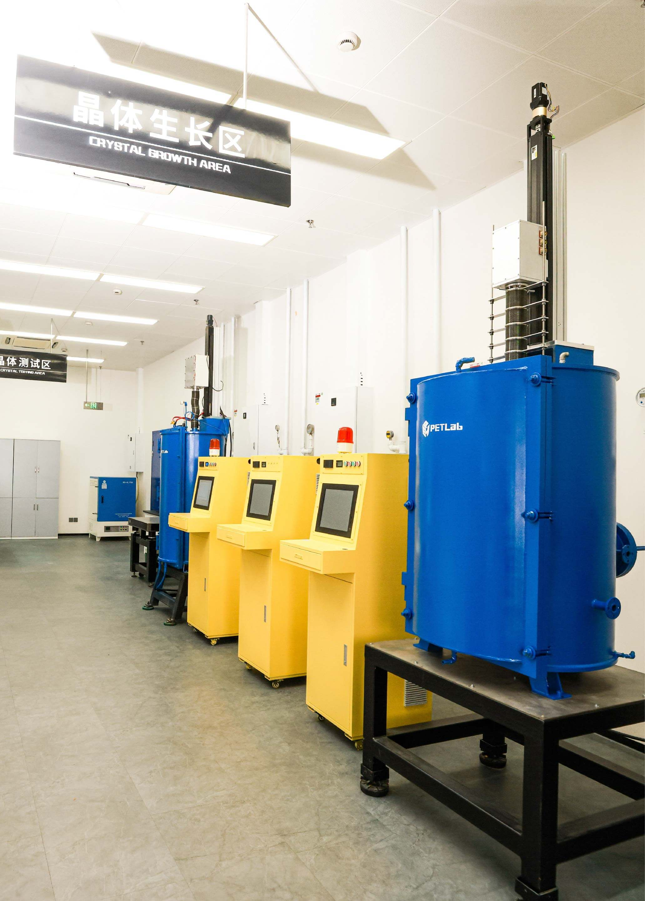
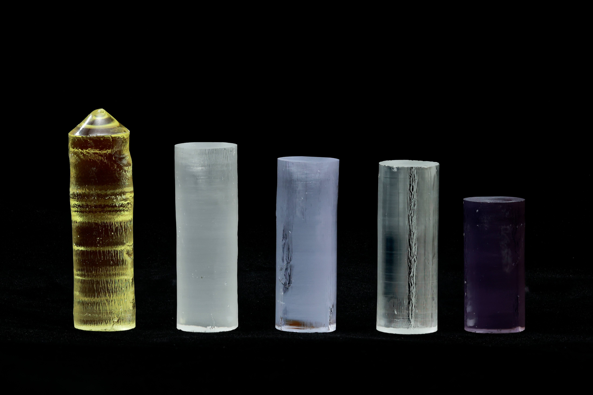
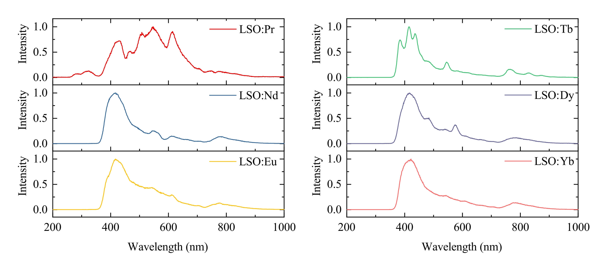
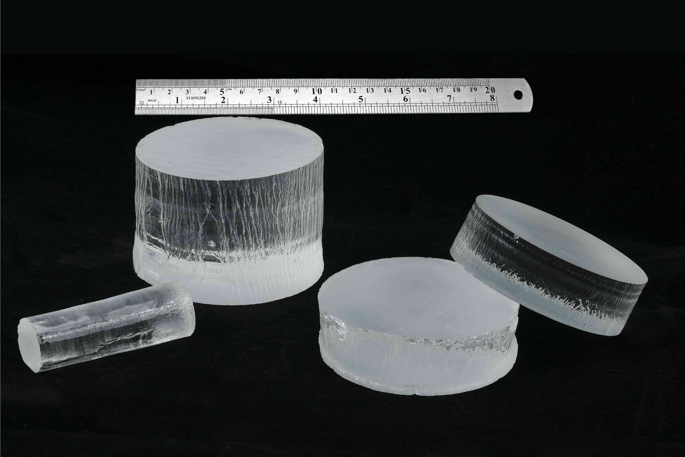
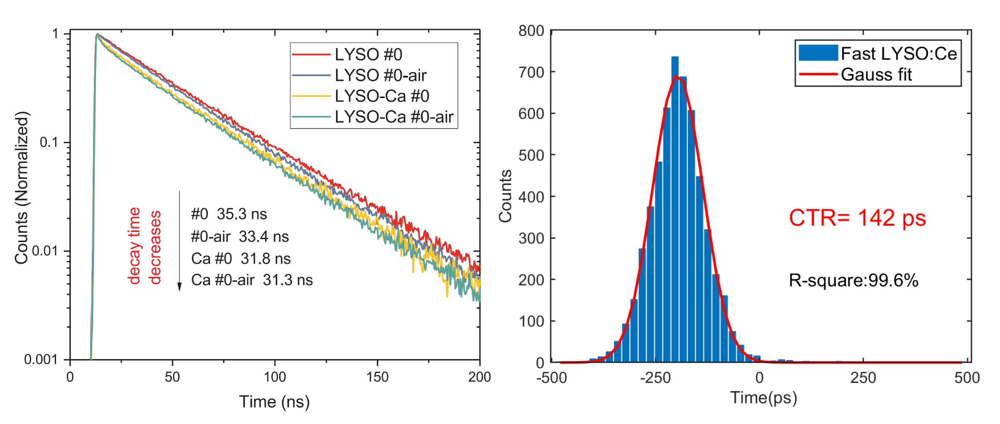
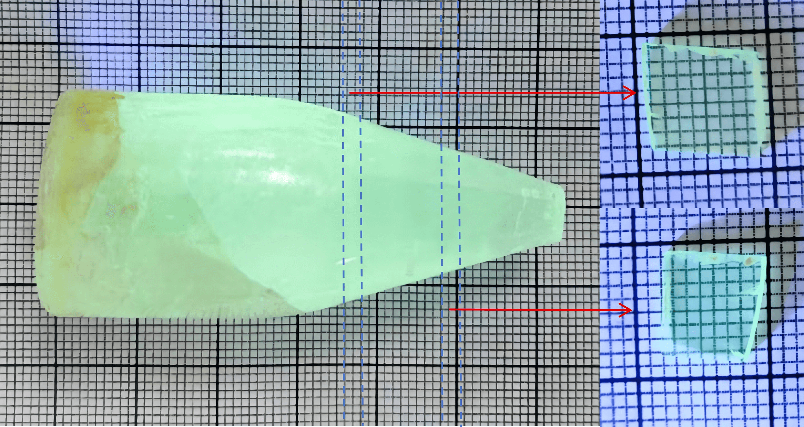
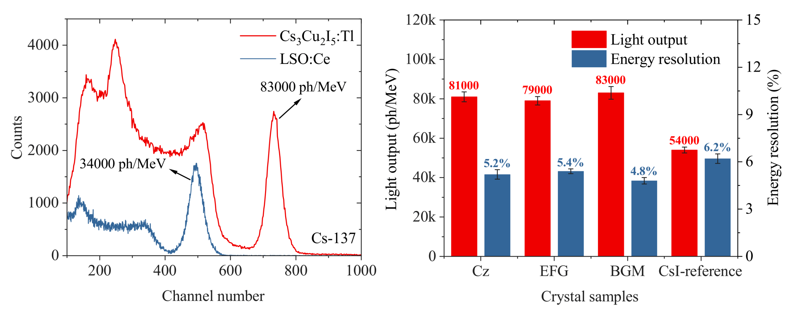

Scintillation Crystals
Programmable Crystals with Extreme Scintillation Performance
The scintillation crystal group focuses on two major systems: rare-earth scintillation crystals and perovskite scintillation crystals. It concentrates on cutting-edge issues such as the 4f-4f and 4f-5d energy level transition characteristics of rare-earth elements and the self-trapped emission mechanism of low-dimensional perovskite configurations. The group is dedicated to the design of programmable methods for novel scintillation luminescence and the development of scintillation crystal materials with ultimate performance. Oriented towards end-to-end innovation from high-performance scintillation crystal design to application, it provides an advanced R&D platform for outstanding students and top-tier talent, aiming to drive revolutionary changes in medical imaging fields like PET and CT from the core material level.
The Scintillation Crystals team is currently seeking external funding, along with other institutional partners. Contact petlab@hust.edu.cn to inquire.
Featured Progress


Controlled Growth Technology for Scintillation Crystals


Programmable Scintillation Luminescence Methods


High-Performance Rare-Earth Scintillation Crystals


Novel Configuration Perovskite Scintillation Crystals
Latest News
PET scanner “sees” is not the body, but a fleeting flash inside a crystal...
“How high is the signal now?” MVT reverses the question: “When did the signal reach this height?” Swapping the axes creates another route to digitiz...
problem, Xie Qingguo, a researcher in the Biomedical Photonics Research Department of Wuhan Optoelectronics National Laboratory (preparation) and a professor at the School of Life of Huaz...
Laboratory Stories
Rui Zheng
Advancing Our Research
Featured Publications
Comprehensive property engineering of YGdAP:Ce scintillation crystals by optimizing the Y/Gd ratio
A Low-Noise High-Photon Detection Efficiency Silicon Photomultiplier in 0.11-μm CMOS
Optical and scintillation properties of modified LSO crystals with different ions doping grown by a rapid CZ system.


Engage with us
Join us to explore inspiring, challenging research via collaborative work.